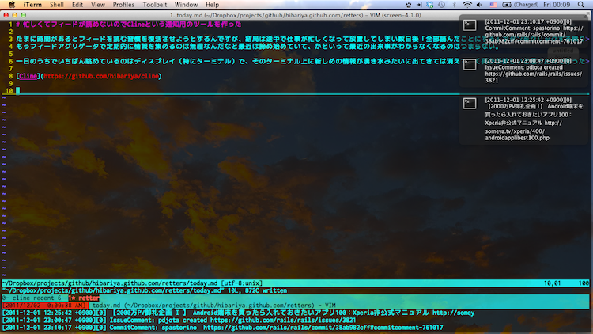
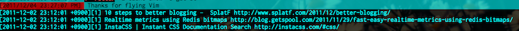

2011-12-04
忙しくてフィードが読めないのでClineという通知用のツールを作った
たまに時間があるとフィードを読む習慣を復活させようとするんですが、結局は途中で仕事が忙しくなって放置してしまい数日後「全部読んだことにする」ボタンをクリックする繰り返しに疲れた。 もうフィードアグリゲータで定期的に情報を集めるのは無理なんだなと最近は諦め始めていて、かといって最近の出来事がわからなくなるのはちょっと。。 別に全部に目を通さなくていいから最近の情報は常に目の届くところで渦巻いていてほしい。
一日のうちでいちばん眺めているのはディスプレイ（特にターミナル）で、そのターミナル上に新しめの情報が湧き水みたいに出てきては消えていく何かが欲しいと思ったので作ってみた。
CUIをメインとした通知アプリのつもり。 これを入れると↓のような通知を永遠に垂れ流すことができる（screenのbacktickとGrowlの部分）。

Clineがやることは単純で、
- ネットで配信されているフィードやJSONから情報を集めてきて
- メッセージと公開時間とURLを一旦DBに保存して
- 設定した場所へ出力する
これだけ。 フィードを集めてきてGrowl通知するだけならGrowlでやれるらしいけど、今回は集めた通知をターミナル上でこねくり回したりもしたいという欲求もあったのだった。
ちなみにscreenのbacktickが複数あるのはここで紹介されているやり方で設定したもの。 ここにあるようにbacktickに日本語を表示するには git://git.savannah.gnu.org/screen.git から最新のソースを引っ張ってきてビルドしないとうまくいかなかった。
普段screenか何かをお使いであれば役に立つかも。
インストール
gemで入れます。rubyが1.9以上でないと動きません。Windowsでの動作は未確認。
$ gem install cline
初回だけ、init コマンドでDBをつくります。
$ cline init
設定
~/.cline/config に、幾つかの設定をします。例として、
- opmlに書いたフィードから集めてきたエントリを
- 最新の2000個まで貯めて
- 標準出力とGrowlに出力する
ような設定にします。
# coding: utf-8 Cline.configure do |config| config.append_collector Cline::Collectors::Feed config.pool_size = 2000 config.out_stream = Cline::OutStreams::WithGrowl.new($stdout) end
べつにGrowlで出さなくてよければ、out_streamを設定する部分を
config.out_stream = $stdout
とします。
フィード一覧の登録
フィード一覧の記述されたopmlファイル（例えば、LDRなどのフィードアグリゲータからエクスポートしたもの）を ~/.cline/feeds.xml に配置します。
OPMLといえばこんな感じのやつです。
<?xml version="1.0" encoding="utf-8"?> <opml version="1.0"> <head> <title>livedoor Reader Subscriptions</title> <dateCreated>Sat, 29 Oct 2011 07:39:38 UTC</dateCreated> <ownerName>hibariya</ownerName> </head> <body> <outline title="Subscriptions"> <outline title="Pinboard (Popular items from Pinboard)" htmlUrl="http://pinboard.in" type="rss" xmlUrl="http://feeds.pinboard.in/rss/popular/" /> <outline title="Strategic Choice" htmlUrl="http://d.hatena.ne.jp/asakichy/" type="rss" xmlUrl="http://d.hatena.ne.jp/asakichy/rss" /> <outline title="RubyKaigi AdventCalender 2011" htmlUrl="http://rubykaigi.org/2011/ja/advent_calendar" type="rss" xmlUrl="http://rubykaigi.org/2011/ja/advent_calendar.rss" /> <!-- こんな感じでフィードの一覧が続く... --> </outline> </body> </opml>
設定はこれで終わりです。
通知の収集
collect コマンドを使うとフィードなどを素直に取ってきます。
cron的な何かで定期実行すればよいと思います。
$ cline collect
通知の出力
show [offset] コマンドで、最も表示された回数が少なく最も古い通知を1件表示します。
[offset]は何件かスキップしたいときに使います。
$ cline show [2011-12-01 19:13:57 +0900][1] Gist: ursm create https://gist.github.com/1415569
tick [offset] [interval] コマンドで、[interval]で指定された秒感覚で新しい通知を1件ずつ出力していきます。
これはtail -f っぽい出力になります。
$ cline tick 0 1 [2011-12-01 19:57:40 +0900][1] IssueComment: pokonski created https://github.com/twitter/bootstrap/issues/736 [2011-12-01 20:01:54 +0900][1] nkym:「おんなのこ」/「yui」[pixiv] http://hibariya.tumblr.com/post/13585938765 [2011-12-01 20:03:43 +0900][1] Photo http://hibariya.tumblr.com/post/13585964610 [2011-12-01 20:04:48 +0900][1] "猫の足音、女の髭、岩の根、熊の腱、魚の息、鳥の唾液から作られた。これらは、グレイプニルを作るのに使用されたため、この世に存在しなくなった といわれる。" http://hibariya.tumblr.com/post/13585980013 # 出力は続く...
ちなみに[1]とか表示されているのは、今までに表示された回数です。
screen の backtick に垂れ流す
~/.screenrc の設定に以下のような backtick の設定をすれば15秒ごとに新しい通知を表示することができます。
backtick 0 0 0 cline tick 0 15
backtickでの表示はこんな感じですね（これは3つ表示している例）。 
ところで、1日に流れてくる情報の数には限りがあります。 もし通知が収集に追いついてしまったらどうなるかというと、また最初から通知し直します。 なので1度見逃しても安心。またいつか流れてきます。 今回の設定例だと最新の2000件が常にぐるぐると回リ続けます。2000件を超した古い通知から削除されます。
ひとつの通知が表示されている時間は短いものですので、目に止まったけど流れてしまったものを手早く見つけるコマンドも幾つか用意しました。
キーワードで通知を出力する
気になったけど流れていったタイトルとか、ドメインで絞り込んだりできます。
search コマンドでキーワード検索した結果を一覧できます。
$ cline search github.com [2011-12-04 17:17:37 +0900][1] CommitComment: svenfuchs https://github.com/travis-ci/travis-ci/commit/b496bc9c5e#commitcomment-766925 [2011-12-04 17:15:30 +0900][1] Push: svenfuchs https://github.com/travis-ci/travis-ci [2011-12-04 16:57:16 +0900][1] Create: banister https://github.com/pry/pry [2011-12-04 16:49:38 +0900][1] Watch: ursm started https://github.com/mgorny/portage-jobsmon [2011-12-04 16:42:15 +0900][1] Push: ConradIrwin https://github.com/pry/pry # 出力は続く...
ヒットしたものをすべて出力するので less などで見るとよいかもしれません。
最近表示した通知をいくつか出力する
recent [limit] コマンドで、最近通知したものを（できるだけ）現在に近い順で一覧できます。
[limit]を指定しなければ1件だけ出します。
$ cline recent 10 [2011-12-01 21:28:10 +0900][2] PullRequest: arunagw closed https://github.com/rails/rails/pull/2793 [2011-12-01 21:28:10 +0900][2] IssueComment: arunagw created https://github.com/rails/rails/issues/2793 [2011-12-01 21:24:25 +0900][2] Push: josevalim https://github.com/rails/rails [2011-12-01 21:22:23 +0900][2] IssueComment: rsim created https://github.com/rails/rails/issues/2793 # 出力は続く...
その他: GithubのActivity
ちなみにGithubのactivityも取得することもできます。 ~/.cline/config のブロック内で
config.append_collector Cline::Collectors::Github Cline::Collectors::Github.login_name = 'github username'
と追記すると自分のfollowしている人のactivityを収集してくることができます。
もっと他の情報を収集して通知する
収集する対象や出力先は拡張できます。 より具体的にはClineのREADMEを参照してください。